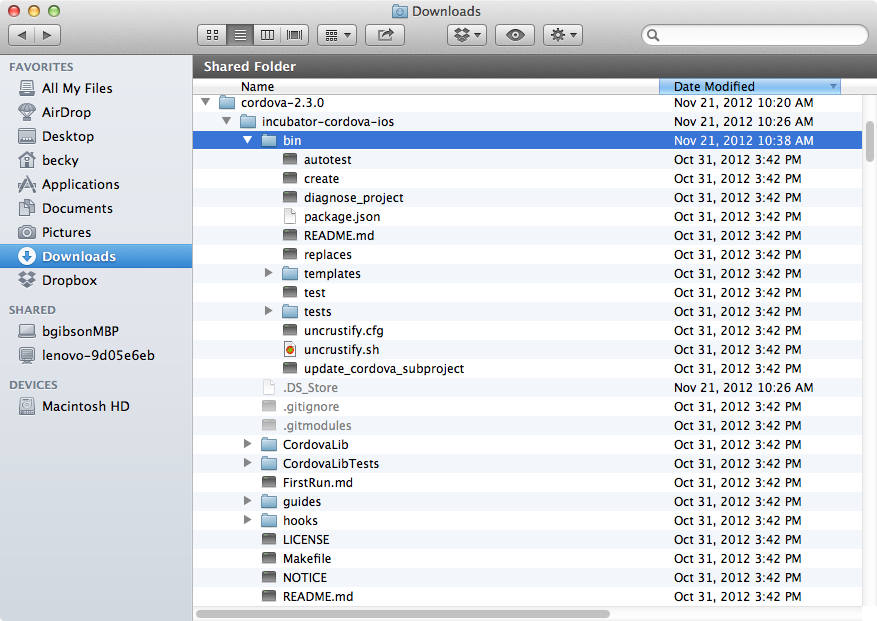
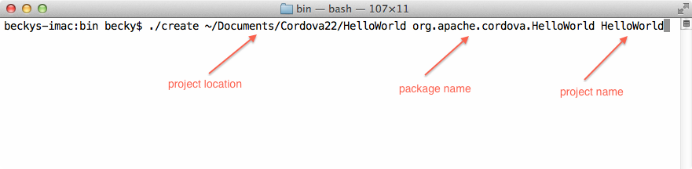
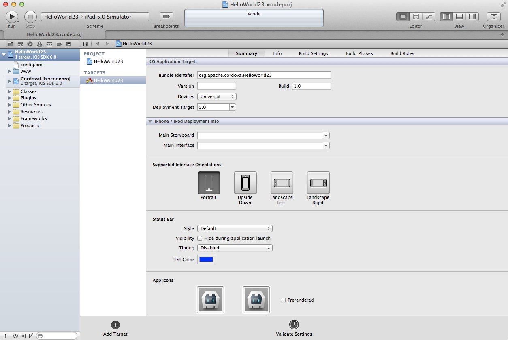
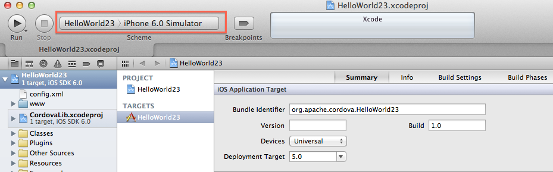
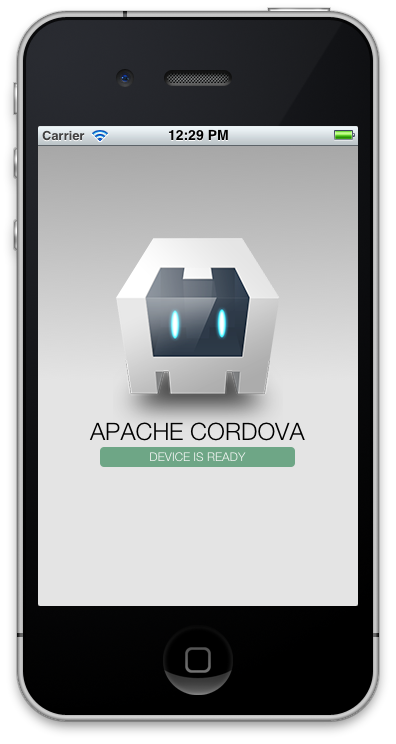
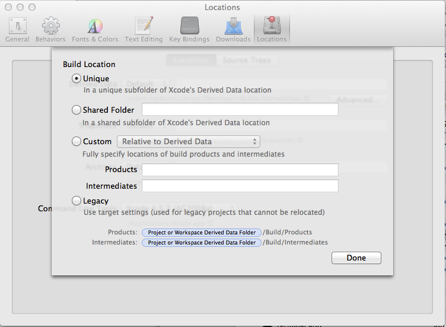

iOS Platform Guide
Introduction
Apache Cordova is a library used to create native mobile applications using Web technologies. The application is created using HTML, CSS and JavaScript and compiled for each specific platform using the platform native tools. Cordova provides a standard set of JavaScript APIs to access device features on all supported platforms. This document describes how to get started using Apache Cordova for the iOS platform.
Requirements
- Intel-based Computer with Mac® OS X® Lion or greater (10.7.4+) The Apple® tools required for building iOS applications run only on the OS X operating system. The version of the development environment required, Xcode® 4.5, runs only on Mac OS X version 10.7 (Lion) or greater.
-
Xcode 4.5 and iOS 6 SDK To submit apps to the Apple App Store℠, you must use the latest versions of the Apple tools. Currently the latest versions are Xcode 4.5.2 and the iOS 6 SDK (Software Development Kit). The download of Xcode 4.5.2 includes the iOS 6 SDK.
- Download from the App Store (https://itunes.apple.com/us/app/xcode/id497799835?mt=12).
- Download from Apple Developer Downloads (https://developer.apple.com/downloads/index.action). NOTE: This link requires Apple Developer registration.
-
Xcode Command Line Tools
Cordova uses the command line to create a new application project. To access the Xcode tools from the command line an additional download is required. The tools are downloaded from within Xcode.
- Open Xcode
- Select the following via the Xcode Menus: Xcode Preferences> Downloads>Command Line Tools. This downloads and installs copies of the core command-line tools and system headers into your computer's system folders.
-
iOS Device
You can test many of the Cordova features using the iOS simulator installed with the iOS SDK and Xcode, but you need an actual device to fully test all of the device features your applications use before submitting to the App Store. The device must have at least iOS 5.x installed, the minimum iOS version supported as of Cordova 2.3. Devices that support at least iOS 5 include all iPad® models, iPhone® 3GS and above, and iPod® Touch 3rd Generation or later. To install apps onto a device, you must also be a member of Apple's iOS Developer Program. The program costs $99 per year. This platform guide shows how to deploy the application to the iOS simulator, in which case developer program registration is not required.
Install Cordova
Download Cordova
Download the latest version of PhoneGap from http://phonegap.com/download. Click on the Download icon and select cordova-x.x.x-src.zip to download to your machine. The download includes the code for all of the Apache Cordova supported platforms.
Extract Cordova
To access the code, it needs to be extracted from the archive (.zip) file:
Navigate to the folder where you downloaded the code. Find the version-specific cordova-x.x.x-src.zip file.
Using the Finder® app, double-click the file to extract. This creates a directory named
cordova-x.x.x.Expand this folder and locate the cordova-ios.zip file and double-click to extract it.
The code for iOS is within the cordova-ios directory structure.
Project Creation
Xcode projects for Cordova are created by invoking a script file via the command line. The following steps explain how to create the necessary directory structure, open and use the Terminal application to create a new project, and execute the create script.
Determine Project Location
Determine where on your system to place your application's Xcode
project files. This tutorial uses ~/Documents/CordovaXY, where the
'X' and 'Y' refer the to Cordova version number.
In the Finder, navigate to the
Documentsdirectory.Create a subdirectory within
DocumentscalledCordovaXY, where the 'X' and 'Y' represent the Cordova version number (23, for example). You can use a different directory name or location if you wish, but you need to remember it for subsequent steps.
Open Terminal
Open the Terminal application, located by default in the
Applications/Utilitiesfolder.-
Use the Finder to navigate to the
cordova-iosdirectory from the downloaded and extracted Cordova code. Highlight thebinsubdirectory as shown:
NOTE: Your listing varies depending on Cordova's version number.
Drag this directory to the open the Terminal icon in the dock. This opens up a default terminal window with the path set to the
bindirectory.
Create New Project
Command Line Syntax
-
Determine Required Parameters
Three parameters are required to creating a Cordova project from the command line, in this order:
-
project location
This directory is where the Xcode project and application files are to be located. This tutorial uses
~/Documents/CordovaXYas the base location (with 'X' and 'Y' representing the Cordova version number) and theHelloWorldapplication name as the project directory. Since the command creates the finalHelloWorlddirectory, it must not already exist. -
package name
When submitting apps to the App Store, this must be the reverse domain name App ID that is created via the Apple Provisioning Portal (described in the Deploy to Device section). The Provisioning Portal is accessible once you have paid for and signed into your iOS Developer Account. Since you don't need to submit this sample app, this tutorial uses
org.apache.Cordovaplus theHelloWorldapp name:org.apache.cordova.HelloWorld -
project name
This is the name of the actual project. Most developers match the project name with the application name, so in this example it's
HelloWorld.
-
-
Execute the Command
In the terminal app with bin as the current directory, enter the 3 pieces of information via the following command:
./create ~/Documents/CordovaXY/HelloWorld org.apache.cordova.HelloWorld HelloWorld
-
Fix Common Problems
No Developer Directory Found
The “Error: No developer directory found at /Developer” message is displayed if the create script can not find the location of the command-line tools within Xcode. This can occur if more than one version of Xcode is installed on the system or when upgrading from older versions of Xcode. The solution is to run the xcode-select command to set the location. If you have installed Xcode in the default location the command to execute is:
sudo /usr/bin/xcode-select -switch /Applications/Xcode.app/Contents/DeveloperSee http://developer.apple.com/library/mac/#documentation/Darwin/Reference/ManPages/man1/xcode-select.1.html for more information on the xcode-select command if you have installed Xcode in a different location.
Optional Features
-
Additional Parameters
The default create script copies the necessary common library files from the Cordova distribution directory into your Xcode project directory. These files appear within the project's
CordovaLibdirectory. Some development organizations prefer that developers reference the common Cordova library files from a fixed location, which helps ensure that all developers use the exact same copy of the CordovaLib code. To do this, add the--sharedparameter to thecreatecommand. The following command creates a project that references the CordovaLib directory from the iOS directory location in which you run thecreatescript:./create --shared ~/Documents/CordovaXY/HelloWorld org.apache.cordova.HelloWorld HelloWorldThe Xcode project files are still in the
~/Documents/CordovaXY/HelloWorlddirectory, but the CordovaLib files are referenced from the Cordova distribution directory. -
Additional Scripts
Within the cordova-ios/bin directory there is an additional script that changes the location of the CordovaLib directory to refer to a shared location after the project has been created,
./update_cordova_subproject path/to/your/projectMost users are satisfied with the default project creation procedure and do not need this additional script. This script uses the location of CordovaLib directory at the same directory level as the bin directory from which it is run as the shared location for CordovaLib. To modify the newly created HelloWorld project to use a shared location for CordovaLib, execute the following command from the
bindirectory:./update_cordova_subproject ~/Documents/CordovaXY/HelloWorld
Running the Application
Open the Project
Using the Finder app, navigate to the location where you created the project. This guide uses ~/Documents/CordovaXY/HelloWorld. Double-click the HelloWorld.xcodeproj file to open the project in Xcode.
Your screen should look similar to:
NOTE: this screen capture shows a project that was created with the name as HelloWorld23.
Deploy to the Simulator
- In the upper-left corner of Xcode, click on the Scheme drop-down list and select the project name, HelloWorld, as the target.
Click the device section and select an iOS Simulator such as iPhone 6.0 Simulator as shown: 
Click the Run button in your project window's toolbar to build, deploy and run the application in the simulator.
Deploy to the Device
Requirements
There are several requirements to deploy to a device. Since this information is not related directly to Cordova, please refer to the Configuring Development and Distribution Assets section of Apple's Tools Workflow Guide for iOS.
Join the Apple iOS Developer Program
Create a Provisioning Profile within the iOS Provisioning Portal. You can use the Development Provisioning Assistant within the Provisioning Portal to create and install the profile and certificate for use within Xcode.
Verify that the Code Signing Identity in the Code Signing sections of the Hello World Xcode project settings has been set with your provisioning profile name.
Deployment Steps
- Plug your device into your Mac via the USB Cable.
-
Select the Target and device
- In the upper-left corner of the Xcode window, click the Scheme drop-down list and select the project name, HelloWorld, as the target.
- Click the device section and select your device from the list. If your device is plugged in via the USB but not visible in the device list, click the Organizer button to determine any errors.
Click the run button to build, deploy and run the application on your device.
Results
The running HelloWorld app is shown below. The Device is Ready line should be slowly pulsating.

Common Problems
Deprecation Warnings
When an application programming interface (API) is changed or replaced by another API, it is marked as deprecated. The API still works in the near term, but is eventually removed. Some of these deprecated interfaces are reflected in Apache Cordova, and Xcode issues warnings about them when you build and deploy an application. The Xcode warning about the ‘invokeString’ method concerns functionality that launches the app from a custom URL. While the mechanism to load from a custom URL has changed, this code is included to provide backwards functionality for apps created with older versions of Cordova. The sample app does not use this functionality, so these warnings can be ignored.
If you wish to remove the warnings you can remove the code that references the deprecated invokeString API:
- Edit the
Classes/MainViewController.mfile. -
Find and comment out the following code by surrounding it with the begin, /*, and end, */, comment characters as highlighted in the code snippet below.
(void)webViewDidFinishLoad:(UIWebView*)theWebView { // only valid if ___PROJECTNAME__-Info.plist specifies a protocol to handle /* if (self.invokeString) { // this is passed before the deviceready event is fired, so you can access it in js when you receive deviceready NSLog(@"DEPRECATED: window.invokeString - use the window.handleOpenURL(url) function instead, which is always called when the app is launched through a custom scheme url."); NSString* jsString = [NSString stringWithFormat:@"var invokeString = \"%@\";", self.invokeString]; [theWebView stringByEvaluatingJavaScriptFromString:jsString]; } */ // Black base color for background matches the native apps theWebView.backgroundColor = [UIColor blackColor]; return [super webViewDidFinishLoad:theWebView]; } Press Command s to save the file.
Navigate to the AppViewDelegate.m file in the Classes Folder.
-
Comment out the following line by placing a double slash at the beginning of line 73 as shown below:
//self.viewController.invokeString = invokeString; Press Command-s to save the file.
Press Command-b to rebuild the project and eliminate the warnings.
Missing Headers
Some users have encountered compilation errors relating to missing headers. This refers to a problem in the build location and is fixed via Xcode preferences.
- Within the Xcode menus select Xcode → Preferences → Locations.
-
In the Derived Data section click the Advanced button and select Unique as the _Build Location as shown: 
This is the default setting for a new Xcode install, but it may be set differently if you upgraded from an older version of Xcode.
Next Steps
Building Your Own Applications
Include Cordova
All of the code for the sample application is contained within the
Xcode project's www directory, where the starting page is named
index.html. Any page that invokes Cordova APIs must reference the
version-specific cordova-x.x.x.js file, as shown in the sample
HelloWorld application's index.html:
<script type="text/javascript" src="cordova-x.x.x.js"></script>
<script type="text/javascript" src="js/index.js"></script>
<script type="text/javascript">
app.initialize();
</script>
Wait for deviceReady Event
When loading a page, Cordova’s deviceReady event must fire before you can access any of the platform features via the Cordova JavaScript APIs. Within the sample application this is set up within the app object found within the js/index.js file. The app.initialze() call at the bottom of the index.html file (visible in the previous code example) sets in motion the binding of events to receive and respond to the deviceReady event.
Another common way to initialize a page is to add a deviceReady event listener from the body's onload event handler as shown below:
<head>
<script type="text/javascript" src="cordova-x.x.x.js"></script>
<script>
function onLoad() {
document.addEventListener(
‘deviceready’, onDeviceReady, false);
}
function onDeviceReady() {
// do Something!
// example: display a Cordova Alert
// see docs.phonegap.com for full details
navigator.notification.alert(
'Cordova is ready!', // message
function() {//do something}, // callback
'Congratulations', // title
'Done' // buttonName
);
}
</script>
</head>
<body onload=”onLoad();”>
.....
Code Your Application
Replace the sample code in the www directory of a new project with the HTML, JavaScript and CSS code for your application. The name of the initial file to load when the app is launched should be index.html (advanced users can change this if necessary). As demonstrated in the HelloWorld sample application, subdirectories within the www directory are permitted. Note that the www directory is readonly, you can not write information to this directory during app execution. If you need to store information use the Cordova File or Storage APIs.
You can use many mobile JavaScript frameworks with Cordova to create the UI and page navigation of your application. Popular ones include:
- JQuery Mobile
- Dojo Mobile
- Sencha Touch
Modify Project Settings
There are many additional considerations to make your application unique. The sample HelloWorld application is set up to run in all iOS environments, iPhone, iPod, and iPad. You can design an app for a single device type by modifying the build settings within Xcode.
You should customize the application with your own icons and splash screens. The sample application includes Cordova specific images in the Apple required sizes and resolutions as examples. The Cordova Specific settings are located in the config.xml file and documented in the Cordova Project Settings Guide. Refer to the Resources section for more Apple specific information about building iOS Apps.
Resources
Apple
Some of these references are within the Apple iOS Developer Reference and require an iOS Developer License.
- Start Developing iOS Apps Today provides a quick overview of steps for developing iOS Apps.
- Member Center home page provides links to several iOS technical resources including technical resources, the provisioning portal, distribution guides and community forums.
- Tools Workflow Guide for iOS
- Xcode 4 User Guide
- Session Videos from the Apple World Wide Developer Conference 2012 (WWDC2012)
Apache Cordova
The PhoneGap contains all of the links below and more.
- Cordova API documentation is available at http://docs.phonegap.com
- PhoneGap google group to discuss and ask questions about Cordova. This forum is monitored by Cordova developers as well as users. When posting please include the platform, device type, Cordova version and as many details as possible about the error or problem.
- File Cordova bugs at https://issues.apache.org/jira/browse/CB
Credits
Mac®, OS X®, Apple®, Xcode®, App Store℠, iPad®, iPhone®, iPod® and Finder® are Trademarks of Apple Inc.